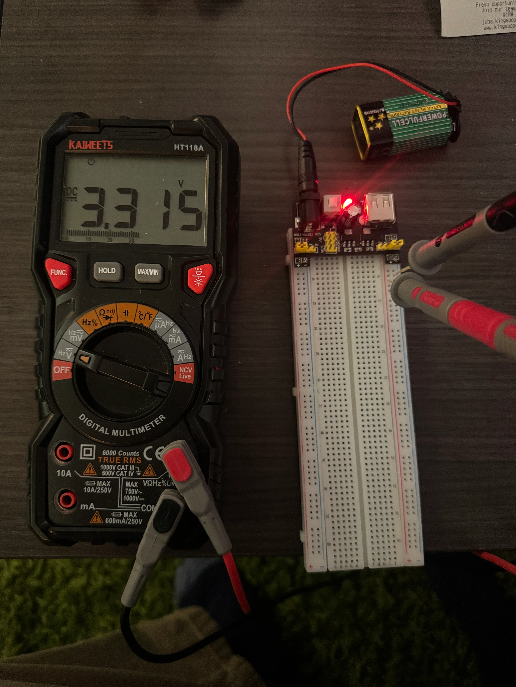
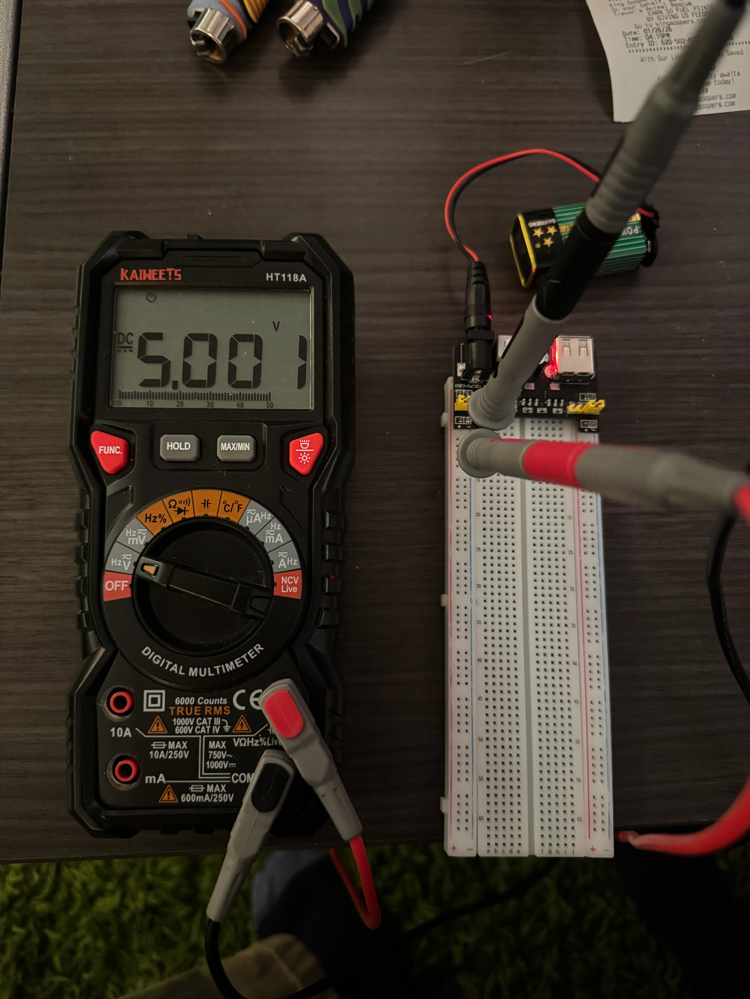
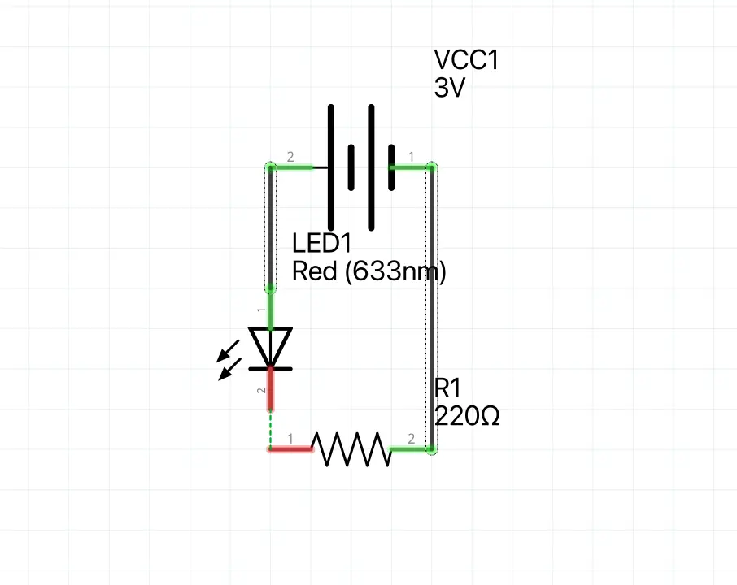
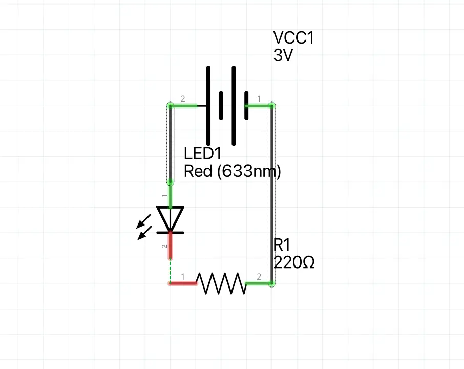
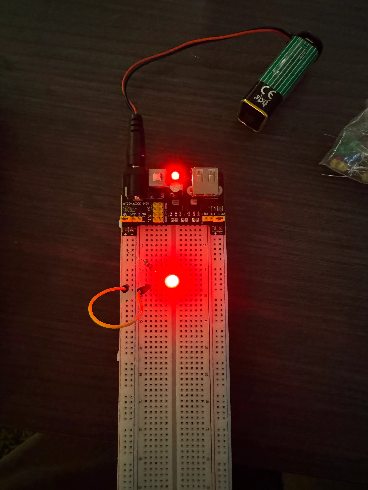
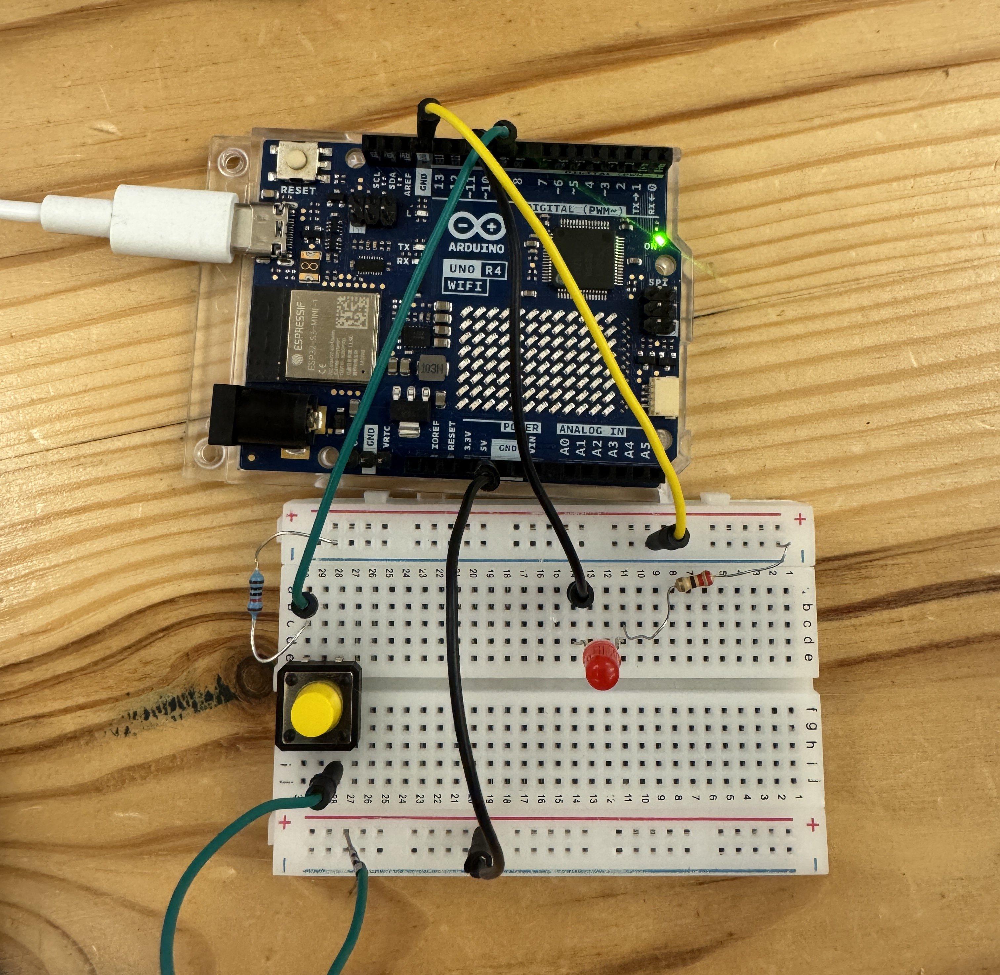
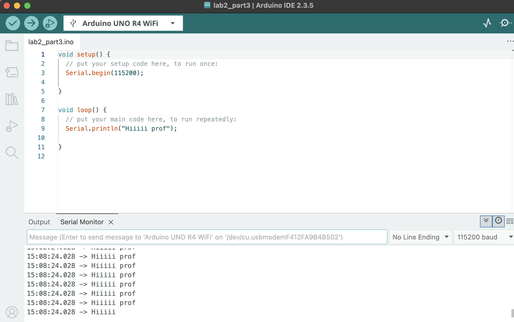

Welcome to Max's Object Blog
This is the place where I will showcase my design process for my 2026 projects.
Project 1: Simple Circuits
Material list
- Power Delivery Breadboard
- 9v
- Multimeter
- Push button
- 220Ω resistor
- 100Ω resistor (in theory)
- Red LED
- Breadboard
For this first Lab we learned the basics of simple circuits. First I used my multimeter to test my 9V battery, I got a reading of 9.1V.

I then set up my power delivery board. I tested my left power line, and got a reading of 3.3V.
 I then tested the right 5V power rail, getting a reading of 5V. I have my own large electornics kit that I've used over the years and unfortunatley I only had a 220Ω resistor. Please forgvie me, I promise you im a circuit god. 3.3V divided by 220Ωs, this gave me 15mA which I knew was still above the forward current. I then wired up my circuit with the 220Ω resistor wired to the cathode and the ground line, I then used a jumper between the power rail and the anode.
 

If we wanted to power the LED with a 5v source, with a goal of 25mA, then we would need a 200Ω resitor, this is perfect as the lowest resistor I currently have is 220Ω.
Lastly, I switched back to the 3.3V circuit, then added a button in series to control the power flow.
Extra Volt
For this I created a circuit that would naturally power the LED, and then I added a button in parallel so that when pressed, the circuit 'shorts' and the power goes through the button instead. The opperator this demonstrates is the ! not operator.
Project 2: React-I/O-n
Material list
- Arduino Uno R4
- USB-C Cable
- Button
- Breadboard
- Resistors
- LED's
- Multimeter
Part 1:
Before I started this project I made sure to Ground myself as I shocked myself earlier today on a door. Thankfully my arduino has a plastic base so it can't be shorted on a metal surface. I already have the IDE downloaded so everything was set up. I plugged in my Arduino UNO R4, updated my libraries, then selected the right board. I then opened the blink example and uploaded it to my arduino
Part 2:
Now I want to make an external LED blink. I choose pin 10 and set it's pinmode to output. I then wrote my loop so that it sets digital write pin 10 to high for a second, then to digital write low for a second. I then started to make my circuit, I chose a Red LED and connected it's cathode to the ground via a 220Ω resistor. With my arduino unplugged, I connected the ground pin the my breadboard ground using a jumper wire, I repeated this with the 5v connections. My last step was to connect the Annode to the power rail, I did this, uploaded my program. Once it was uploaded I realized my silly mistake, I had connected the LED to the Arduino 5v line, when in reality it should've been pin 10. I swapped the pins and everything worked!
I then decided to make a shorter, uneven blink. I decided to have it on longer than it was off so I set the low delay to 500ms, this wasn't super noticeable so I reduced to to 100ms.
Part 3:
Now we need to convert this to control and LED through button press. Based on the diagram in our lab document, pin 7 will normally be 0V as it's pulled down to ground, but due to the extreme resistance, whenever the button is pressed it will go to 5V. I will use this to control the LED. If we didn't have a connection to ground, then the pin will be floating and will pickup random electrical interference. Additionally, if the button loop had no resistor in series, then it would easily short circuit and generate a ton of heat. So for my setup, I connected the button to pin 9 and to ground through a 10kΩ resistor. I then connected the 5V rail to the other side of the button. For the LED, I connected the cathode to ground through a 220Ω resistor, and the anode to pin 10.
I then wrote the code so that each loop we check the state of the button and then apply it to the LED via pin 10. I had to set pin 9 to input so we can detect the button state. I then used digitalRead(9), to get the pin state and then used digitalWrite(10, buttonState) to set the LED state. I also added some print statments to print the button state just to make sure everything was working. I made sure to add a slight delay to my loop to avoid any bugs. unfortunatley when I uplaoded the code the LED was on which shouldnt be the case, I added some print statments to give me an idea of what section of the if statment I was in. After this I realized that I was passing the pin number to the if statment, rather than my pinState bool which I only intialized. After fixing this my circuit worked perfectly!
For the serial output part of this assignment, I choose to print the message "hiii prof" to the serial monitor. At first I used a lowercase 's' in Serial so it didn't work but after fixing this it worked perfectly.
I modified my intital code and instead nested my pinState detection within a while loop, this ensures that waiting is only printed once.
I noticed that the button oscillates when I press it once, this is due to the speed that we check the button state, how long im holding the button and the fact the program loops as soon as a press is detected. If I added a variable that checks if the button has been pressed, then i can apply that so that I stay within the while loop.
Part 4:
I now need to program a game in which an LED will turn on after a random time interval, the player will try to press the button as soon as they notice. I setup my program so that it welcomes you within the setup, then inside the loop is all my game round logic. I've used random before so I choose an empty pin to generate a random seed, I print ready and then start the LED delay, once the delay ends the program imediatley enters a while loop that will only terminate when the button is pressed. Outside of the while loop once the button is pressed, it will output the total milliseconds it took for you to react to the LED. Lastly, the program waits 5 second and starts another round/loop.
Extra Volt
The first thing I modified for this was adding distinct button state variables. I also removed the mechanism for tracking how much time the reaction was. Once either button has been pressed, and if statement checks which button was pressed and prints a message congradulating the relevant player. The program then waits 5 seconds before starting again.